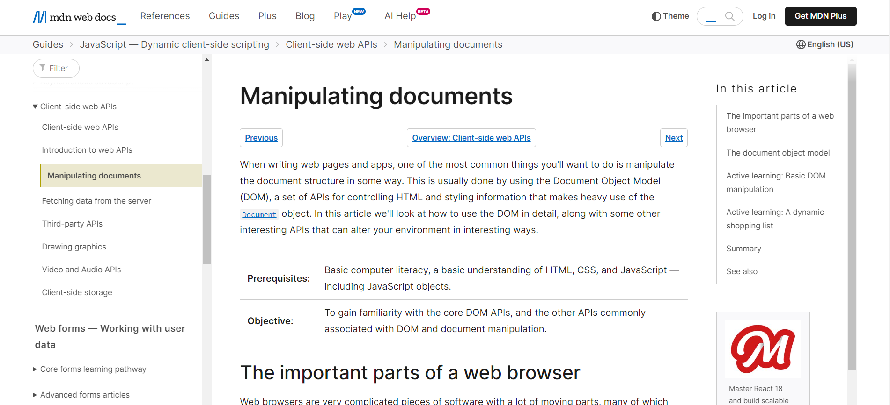
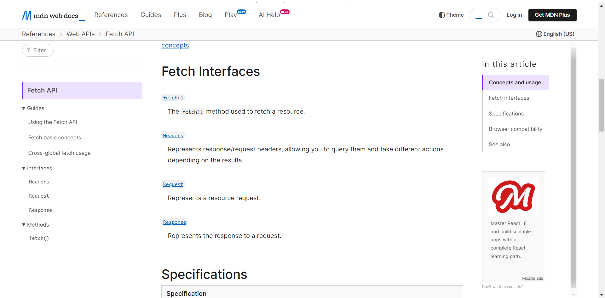
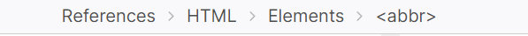
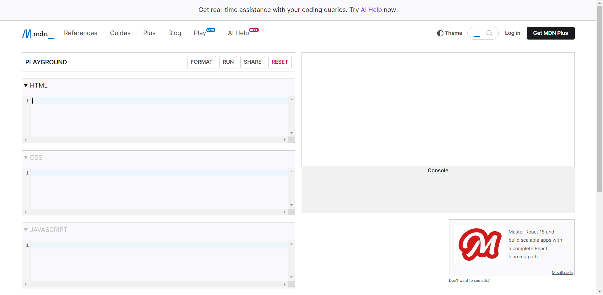
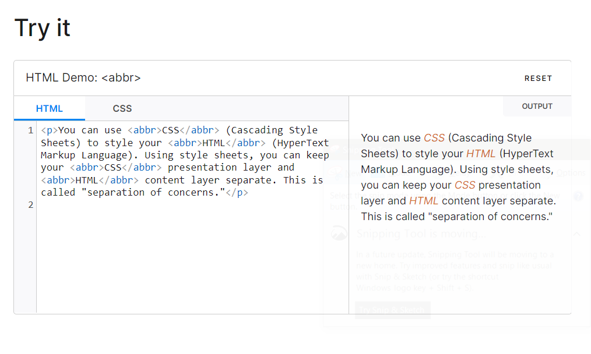
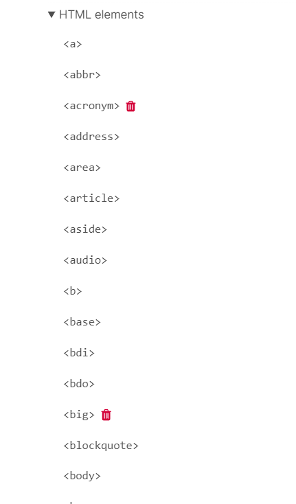
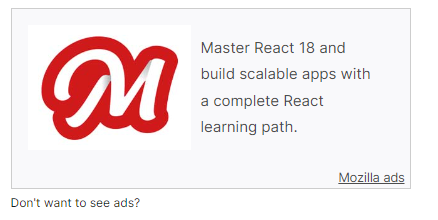
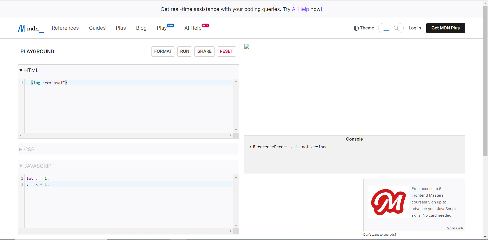

Completed Heurstics Evaulation
Nielsen's 10 Heurstics were used to evaulate the website:
1)"Visibility of System Status"
The website uses clear headings and structure to show/tell the user what page they are at. For example, the following is picture "Manipulating Docuemnts" page of the site.
As seen in the picture, not only does the website clearly show the title of the page, it also shows related topics on the left,and shows in which section of the current page the user is at (while it is not show in the photo, the section the user is at is also highlighted just like on the left). This might be an issue, but it might be easier left and right section previsouly mentioned were combined into one. For example, they could move everything from the "In This Article" section and move under the current document on the left. This will alow for more quicker acess (since they user would not have to look at both the left and right), and allow more space to display their content.
2) "Match Between System + Real World"
User friendly wording is used, and when the website goes over more technial items, they offer deffintions, graphs, examples and other things to help explain the content. In certain instances, user can even click on words or phrases to go to a sperate page to find more information over them.
The picture above shows eamples of how they help the user understand more techinal words. This page is over the FETCH api, and if the user has any questions over the pages content, they are offered an definition and a link to explore that information more.
3) "User Control and Freedom"
The page doesn't offer much user control or freedom. Users can go back and forth anywhere on the page, and can go to any page avaible. That is it. This site is just for documetion things, so it doesn't matter that much.
4) "Consistency and Standards"
The page is consistent on their pages and standards. The only time I noticed that they were not consistent was how the home page looked different form the other pages:
The frist picture is of the home page, and the next one another page. While these two pages aren't consistent, it is understandable that the home page might look different. Therefore, this isn't really an issue.
5) "Recongintion Rather Than Recall"
At the top of the current page, the site has a small section where it tells the user how they got to that page. For example, here is a picture of the section after heading to the "abbr: The Abbreviation element" page:
From this section, the user can clearly see that, starting from the home page, they went refernces, HTML, Elements and then they selected the abbr page. Even if the user did not start from the home page, they could still nagaviate back to the home page. The words in line are also link, so users can also click them and go back to a certian section. This section is on every page, so the user can use to navagate on any page they might be on.
6) "Error Prevention"
The only places a user can cause an error (that I have found so far) is in the small interactive demo, and on the "Play" page, which allows users to enter custom code. The following is a picture of the "Play" page I was talking about:
Users are allowed to type any code they want, which can casue errors if a user inputs invalid code. While the site does nothing to prevent this, there really isn't nothing to stop the user from writing incorrect code. If they do type invalide code, it is hightligted red.
Here is an example of one of the demos they have on the webiste (in this demo they show how to use the abbr tag):
Just like in the "Play" page, users are allowed to edit the text on the left, which can cause errors. Again, the website doesn't prevent these errors, and when there is an error the incorrect part is hightligted red only when the user clicks on it. Otherwise, the user is not alerted of the error.
7) "Flexibilty and Efficiency of Use"
The site is not that flexable, but it is really is efficent to use. A user can easily change the topic or language they are looking at, and related information is grouped together which makes learning more over a single topic more easier for the user. The navagation also helps users to go directly to the information they are looking for. Another way the website helps users find information is by sorting information by name. For example, in the section where they go over all the tags of HTML, they are alphetized which makes finding ones easier:
8) "Aesthetic and Minimalist Design"
The website does mostly only include needed information. The only extra things are the ads for courses or langauges that have all of the pages.

9) "Helps Users with Errors"
As stated in the heurstic 6 (error prevention) evaulation, the only places where an error can happen is on the "Play" page (or playground page) and the demos. When an error arises in playground page, website informs the user below the output window on the right. If they error was done in HTML, the user is not informed about it, but the output of the code will be a off. The following picture is an example of how shows the users errors:
It does have a small issue that the error message doesn't offer any help to the user how to solve it sometimes.
There is an issue when error arises in the demo area. The user is not told anywhere about the error, and the error can only be see when you click on it. I was going to post a picture, but to use the tool to take the screenshot, I have to click away which made the error not be seen. The issue causes the user to not know where the error is, which might drive users away from the site.
10) "Help and Documentation"
The website does offer some help to help the user find what they need. For example, if you hover over "Refernces" in the nav bar, it tells the user what main topics, and a small defintion of what it contains, the site has documentaiton over. The site iself has not documentaion, but the website is set up in easier to use manor that none is needed.
Summary of Issues Identified
The MDN Web Docs doesn't have many issues, but I found two issues.
Issue One
This issue isn't really that much of an issue. It doesn't take away from the users expereince or cause any problems for the user. The website has a section on the left and right of a page to help users find where they are and to navagate to more information. The left section lists related pages, which are grouped by topic. On the right, lists the subsections inside the article. In both of the section, the place where the user is at right now is highligted so it easy to see where the user is at. These two section can be see in the following picture:
The "issue" is that it would be a little bit better to combine both sections. For example, they could move everything from the right section and move to under where the highlite is on the left section. This will alow for more quicker acess (since they user would not have to look at both the left and right), and allow more space to display the actual page content.
Issue Two
The second issue is how the website displays errors in the demo page.
If a user enters unvalid code, the user is not informed about the error. The only way to tell theres been an error is if the output looks werid or if you click on the error. For example, in the demo pictured above, I tried to change the beginning p tag to random letters. The output looked the same, but only when I clicked the tag did it show that it was wrong. When I clicked on it, the tag would get a red highlight. No error message or anything was display.